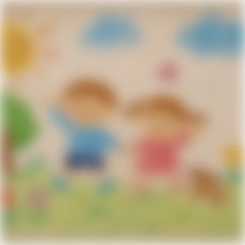

<div class="bg-heai">
  <div class="bg-brita">
    <div class="frame-427318956">
      <div class="frame-427318954">
        <div class="back">Back</div>
        <div class="frame-427318953">
          <div class="frame-427318952">
            <div class="frame-2147238261">
              <div class="frame-2147238264">
                <div class="frame-427318937">
                  <div class="frame-2147238257">
                    <div class="_2025-10-01-12-17">2025.10 ~ 12</div>
                    <div class="side-project">SIDE PROJECT</div>
                  </div>
                  <div class="heai">HEAI</div>
                </div>
                <div class="frame-2147238263">
                  <div class="adobe-apps">
                    
                    
                  </div>
                  
                  
                  
                </div>
              </div>
              <div class="frame-427318950">
                <div class="frame-427318946">
                  <div class="div">소속 | 역할</div>
                  <div class="ux-ui-designer">막시무스 | UX/UI Designer</div>
                </div>
                <div class="frame-427318947">
                  <div class="div">담당업무</div>
                  <div class="ia-user-flow-ux-ui">
                    사용자·시장 리서치 및 서비스 방향성 도출
                    <br />
                    페르소나 · IA · User Flow 설계
                    <br />
                    가족 건강관리 서비스 기능 및 화면 기획
                    <br />
                    디자인 시스템 및 주요 앱 화면 UX/UI 디자인
                    <br />
                    프로토타입 제작
                  </div>
                </div>
                <div class="frame-427318949">
                  <div class="div">기여도</div>
                  <div class="div2">
                    커뮤니티 플로우 및 화면 디자인 · 디자인 시스템 구축
                  </div>
                </div>
              </div>
            </div>
            <div class="frame-2147238265">
              <div class="frame-427318951">
                <div class="overview">Overview</div>
                <div class="ai">
                  일상 속 건강관리를 꾸준히 이어가기 어려운 사용자를 위해 생활
                  습관과 건강 루틴을 보다 쉽고 재미있게 관리할 수 있도록 기획한
                  자기관리 앱 프로젝트입니다. 사용자 조사를 바탕으로 서비스
                  구조와 주요 기능을 정의하고, 루틴 관리 경험이 단순한 기록에
                  그치지 않도록 AI 캐릭터와 커뮤니티를 활용해 지속적인 참여와
                  동기부여가 이어지는 사용자 경험을 설계했습니다.
                </div>
              </div>
              <div class="div3">기획서 →</div>
            </div>
          </div>
          <div class="frame-427318935">
            
            <div class="frame-427318957">
              
            </div>
            <div class="frame-1430106058">
              
            </div>
            <div class="frame-2147238250">
              <div class="div4">생활건강 루틴 관리 어플</div>
              <div class="heai2">HEAI</div>
            </div>
            <div class="div5">
              
            </div>
          </div>
        </div>
      </div>
    </div>
  </div>
</div>
